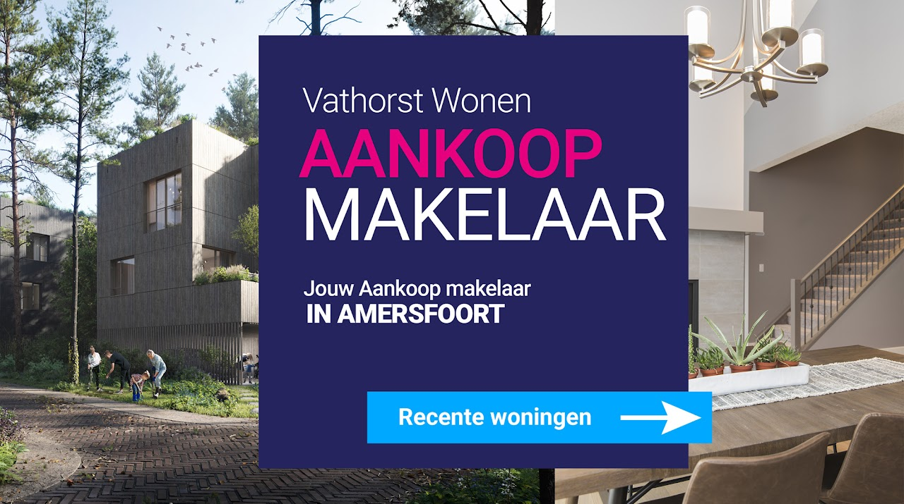

i. Verkoop
Jouw verkoopmakelaar
De juiste prijs, de juiste presentatie en de juiste timing. Wij begeleiden je van waardebepaling tot sleuteloverdracht.
Meer over verkopenEen woning is meer dan vier muren — het is waar je thuiskomt na een lange dag, waar je leeft, werkt, droomt. Of je nu koopt of verkoopt: persoonlijk, toegankelijk advies in Vathorst en de regio Amersfoort.

Een woning is nu misschien nog wel meer dan voorheen een plek waar jij je goed wilt voelen. Waar je thuiskomt na een lange werkdag, of waar je tijdens het thuiswerken op een prettige manier kunt afzonderen.
Wanneer je een volgende stap wilt maken komt vaak één vraag naar voren: ga ik eerst kopen of eerst verkopen? Reden voor een verkennend, informatief gesprek dat verder reikt dan alleen de hypotheekadviseur. Zo weet je wat je kunt verwachten en waar de speelruimte ligt.
Ook voor starters op de woningmarkt of senioren die kleiner willen gaan wonen of huren biedt Vathorst Wonen passend advies. Op een persoonlijke en toegankelijke manier.
Of je nu wilt kopen, verkopen of eerst gewoon wilt weten waar je staat — alle expertise onder één dak in Vathorst.
De juiste prijs, de juiste presentatie en de juiste timing. Wij begeleiden je van waardebepaling tot sleuteloverdracht.
Meer over verkopen
Van zoekopdracht tot onderhandeling. Met grondige kennis van de Vathorst-markt halen wij eruit wat erin zit — zonder verrassingen.
Meer over aankoopWat is verstandig in de actuele woningmarkt? Een verkennend gesprek dat verder gaat dan getallen. Wij denken mee, niet voor.
Plan een gesprekVerhuizen heeft veel gezichten. Wij stemmen onze aanpak af op het verhaal achter de woning.
De vraag die elke doorstromer zich stelt. Wij maken de speelruimte concreet, brengen risico's en kansen in kaart en helpen je een weloverwogen keuze maken die past bij jouw situatie.
Een spannende stap met veel onbekenden. Wij vertalen de markt, leggen contracten en bouwjaren uit, en zorgen dat je zelfverzekerd je eerste woning betreedt — niet ondergesneeuwd raakt.
Kleiner wonen of toch nog liever huren? Wij denken mee over de praktische én emotionele kant van het loslaten van het oude huis en de stap naar iets dat beter past bij nu.
Als wegen scheiden komt de woning vaak in beeld. Wij begeleiden zorgvuldig en discreet — met aandacht voor beide partijen en heldere financiële inzichten — zodat je verder kunt.
Ik ben die professional die opdrachtgevers helpt bij het vinden van de juiste woning en het nemen van een weloverwogen beslissing. Andersom help ik verkopers bij het bepalen van de juiste aanpak om te komen tot een zo goed mogelijk verkoopresultaat.
Mijn aanpak? Persoonlijk en toegankelijk. Ik ken Vathorst en de regio Amersfoort op straatniveau — welke wijken in trek zijn bij gezinnen, waar de seniorenappartementen schaars zijn, en waar de markt op dit moment dynamiek toont.

De woningmarkt verandert snel. Een actuele waardebepaling geeft je grip — of je nu verkoopplannen hebt of gewoon wilt weten waar je staat. Geen verplichting, wel duidelijkheid.
Vraag jouw waardebepaling aanVul je adres in en we nemen binnen 1 werkdag contact op.
Vathorst Wonen is actief in heel Amersfoort en aangrenzende kernen. We kennen de straten, de scholen, de bouwjaren en de prijsdynamiek per wijk.
Praktische vragen over kopen, verkopen en taxeren in Vathorst en Amersfoort — bondig beantwoord.
De courtage van een verkoopmakelaar in de regio Amersfoort ligt doorgaans tussen 0,9% en 1,5% van de uiteindelijke verkoopprijs (excl. btw). Vathorst Wonen werkt met heldere afspraken en transparante tarieven — je weet vooraf precies wat je betaalt en wat je ervoor krijgt. Een verkennend gesprek en de waardebepaling zijn altijd gratis.
De waarde van een woning in Vathorst hangt af van bouwjaar, perceel, energielabel, ligging in de wijk (De Velden, Laak, De Bron) en de actuele markt. Online tools geven een ruwe richting; een persoonlijke waardebepaling door een NVM-makelaar is preciezer omdat we ook recente verkopen in jouw straat en de specifieke kenmerken van jouw woning meewegen. Gratis en zonder verplichting bij Vathorst Wonen.
Hét antwoord bestaat niet — het hangt af van je financiële speelruimte, je risicobereidheid en de marktdynamiek op dat moment. Eerst verkopen geeft zekerheid over je budget; eerst kopen voorkomt dat je tussen twee woningen in zit. Vathorst Wonen brengt samen met een hypotheekadviseur in beeld wat in jouw situatie verstandig is, vóórdat je een onomkeerbare stap zet.
In een markt waarin huizen in Vathorst en Amersfoort vaak boven de vraagprijs gaan en veel bezichtigingen elkaar opvolgen, voorkomt een aankoopmakelaar dat je te veel betaalt of essentiële zaken (bouwkundige staat, erfdienstbaarheden, VvE) over het hoofd ziet. Wij werken met een Gratis Zoekopdracht waarmee je woningen vóór publicatie ziet.
De gemiddelde verkooptijd in Vathorst en Amersfoort schommelt momenteel tussen de 3 en 6 weken vanaf publicatie tot voorlopig koopcontract, afhankelijk van prijs, segment en presentatie. Goed voorbereide woningen — met sterke fotografie, juiste prijspositionering en een doordachte campagne — gaan vaak binnen 2 weken onder bod.
Ja. Michel Visser is Register Taxateur (RT) en levert NWWI-gevalideerde taxatierapporten die geaccepteerd worden door alle Nederlandse hypotheekverstrekkers. Handig bij aankoop, herfinanciering of verbouwing in Amersfoort en omgeving.
Een goede match tussen makelaar en opdrachtgever begint bij een prettig gesprek. Bel, mail of loop binnen — wij maken er tijd voor vrij.